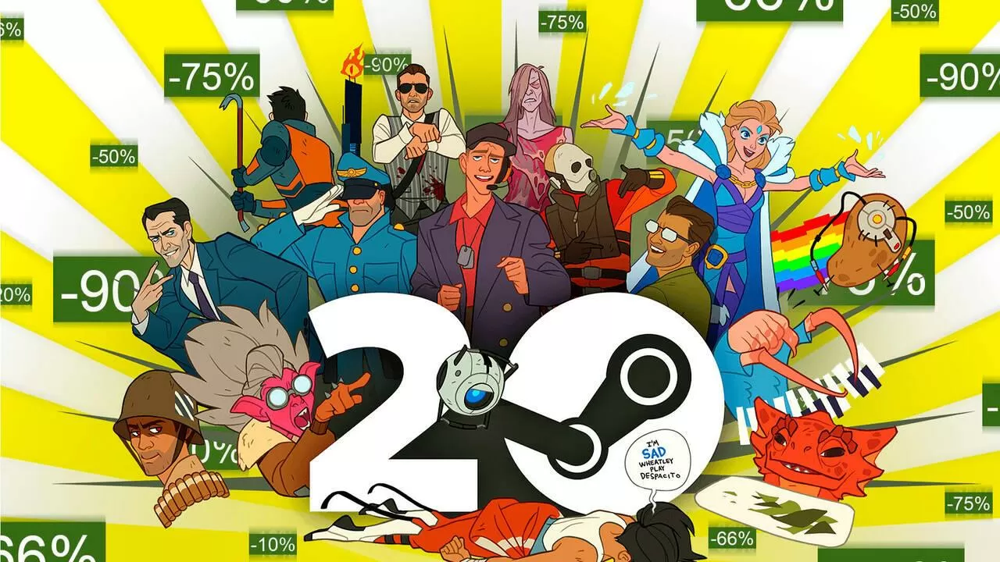

Steam cumple 20 años y lo celebra con más de 4000 juegos rebajados
hasta un 90 %
Juegos de PC clásicos y modernos están disponibles con hasta un 90 %
de descuento en Steam por el 20 aniversario de la plataforma.

Steam, la plataforma de distribución de videojuegos digitales para
PC de Valve, cumple hoy 20 años. Es por eso que la compañía lo está
celebrando por todo lo alto, transformando su interfaz para darle un
aspecto clásico con el diseño original de la plataforma y con un
montón de acciones en redes sociales, avatares y fondos de regalo y
una línea de tiempo que repasa toda su trayectoria.
Este es el nuevo juego gratis para PC que puedes descargar esta
semana
Como todos los jueves como promoción de la misma Epic Games Store,
hay juegos nuevos que podemos descargar sin ningún costo para
nuestras computadoras.
Spelldrifter
Combina las tácticas posicionales tipo rompecabezas de los RPG por
turnos con la personalización y la rejugabilidad de los juegos de
cartas coleccionables. El resultado: un híbrido en el que los
jugadores deben hacer malabares con los recursos a su disposición
utilizando tanto el tiempo como el espacio, explica la sinopsis
oficial del juego en la Epic Games Store.
iPhone 15: así es el nuevo celular y equipos de Apple
Hoy se han dado a conocer el iPhone 15 y el iPhone 15 Plus, con sus
características y sus precios.

Apple ha revelado su nuevo iPhone 15 y el iPhone 15 Plus, estos
equipos tendrán una mejora lógica en su procesador y cámaras, además
de un cambio de diseño, siendo lo más notorio la eliminación del
notch y la llegada del USB-C en lugar del puerto Lightning, además
de incluir iOS 17.
La billetera de Google ya está disponible en Colombia
La aplicación permite guardar los tiquetes de embarque y la opción
de débito y crédito de los bancos
Google anunció la llegada de la aplicación de billetera para sus
dispositivos Android y aquellos Wear OS, de esta manera se permitirá
añadir tarjetas de crédito y débito para realizar pagos sin contacto
en Colombia, y guardar tarjetas de embarque de más de 30 aerolíneas.